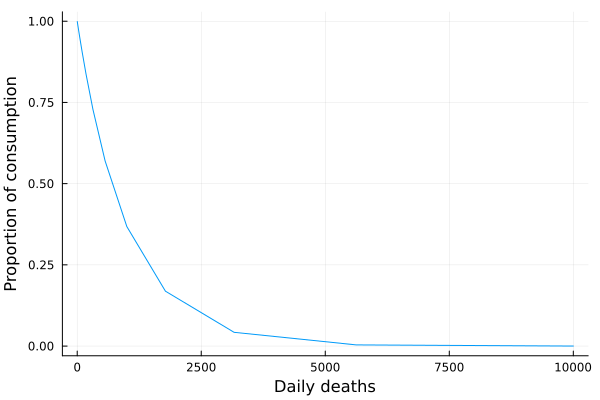

Estimating labour and consumption over an epidemic
This example shows how to estimate labour and consumption over an epidemic using example epidemiological data.
Labour availability
This subsection shows how to calculate the labour available given a DataFrame of epidemic outcomes generated by an epidemic model, using the function EpiHelpers.calc_labour_avail.
The method is flexible to the epidemiological compartments of the generating model, and the labour productivity of infected individuals can be scaled for each compartment and each economic sector separately.
See the theory section below on how this method works.
Note that this method is currently designed to work with the Daedalus integrated epidemiological-economic model and provides default scaling for the infected compartments tracked in that model: infected and asymptomatic, infected and symptomatic, infected and hospitalised pending recovery, infected and hospitalised pending death, and dead.
The default scaling is given by the function EpiHelpers.default_labour_scaling, which returns a Dict giving the mapping of compartment names to vectors of scaling coefficients. Scaling vectors are expected to have the same length as the number of economic sectors.
It is not currently possible to modify the scaling of a single compartment while using defaults for all others.
Load the example data provided with this package and filter for the working-age population.
using EpiEconShocks, DataFrames
# Example data is generated from the R implementation of daedalus
# for a limited number of timesteps
df = EpiEconShocks.Example.get_example_epi_data()
# Filter to working-age population, excluding non-working sectors
df_work = filter(
row -> row.age_group == "20-64" &&
row.vaccine_group == "unvaccinated" &&
row.econ_sector != "sector_00",
df
)
# Extract worker counts by sector at baseline
n_workers = filter(
row -> row.time == minimum(df_work.time) &&
row.compartment == "susceptible",
df_work
)[:, "value"]
n_adults = sum(n_workers)
n_school = 5_000_000.0 # arbitrary assumption of number of school children5.0e6Calculate labour availability over the epidemic, assuming an epidemic-mitigating closure from day 3 to day 8.
# dummy closure is passed by keyword arg
labour_avail = EpiEconShocks.EpiHelpers.calc_labour_avail(
df, n_workers, n_adults, n_school,
times_econ_closures = [(3.0, 8.0)]
)
labour_avail1×45 Matrix{Float64}:
0.827215 0.722519 0.721187 0.750716 … 0.829899 0.829822 0.800632The result is a matrix of dimensions $[1, N]$ with values in [0, 1] indicating the fraction of available labour in each economic sector for $N$ economic sectors. This can be easily reshaped into a 1-dimensional array or vector.
Note that values are 1.0 or close to 1.0 over the early stages of the epidemic represented by the example data.
Consumption
This subsection shows how to calculate consumption over an epidemic given a DataFrame of epidemic outcomes.
using EpiEconShocks, DataFrames
# Example data is generated from the R implementation of daedalus
# for a limited number of timesteps
df = EpiEconShocks.Example.get_example_epi_data()
# using a single value of phi
phi = 0.001
EpiEconShocks.EpiHelpers.calc_consumption_avail(df, phi)1×1 Matrix{Float64}:
0.054683310402303384The coefficient of infection avoidance $\phi$ may also be a vector of sector-specific values. Here we assume that there are 10 economic sectors; any number of sectors can be passed.
Similar to EpiHelpers.calc_labour_avail, the output is a matrix of dimensions $[1, N]$ with values in $[0, 1]$ indicating the consumption availability in each economic sector for $N$ economic sectors.
# assume a dummy value of phi for an arbitrary number of 10 sectors
phi = collect(1:10) / 1e3
EpiEconShocks.EpiHelpers.calc_consumption_avail(df, phi)1×10 Matrix{Float64}:
0.0546833 0.0453851 0.0431651 … 0.0337852 0.0321696 0.0306313Theory: Labour availability
This section explains the theory behind the calculation of labour availability over an epidemic, accounting for direct effects of infection, indirect effects of infection, and mitigation measures.
Direct effects of infection
Infection may directly reduce labour availability by making it harder or impossible to work while experiencing symptoms.
Assume a population of size $N$ which is the sum of the number of individuals in age group $j$ and economic sector $k$.
\[N = \sum_{j,k} N_{j,k}\]
The pre-pandemic workforce in sector $k$ is the number of individuals in that sector, summing over all age groups.
\[\tilde{L}_k = \sum_{j} N_{j,k}\]
Assuming a compartmental epidemiological model, infection dynamics further place individuals into distinct epidemiological states $s$. Epidemiological states are assumed to apply to all economic sectors $k$, similarly dividing workers in each sector.
\[N_{k}(t) = \sum_{s, j} N_{s,j,k}\]
Individuals' ability to work productively may be assumed to vary over the different epidemiological states $s$. For example the severely ill and dead may be assumed to have a productivity of zero, while some states (such as asymptomatic infection) may allow for substantial productivity.
The available labour at time $t$ in any sector $k$ is then the sum over ages and states of the number of individuals in each state $s$ scaled by the state-specific productivity $p_s \in [0, 1]$ (relative to that of healthy or pre-pandemic workers).
Note that we assume uniform scaling of productivity across age groups.
\[L_k^{\text{avail}} (t) = \sum_{s, j} p_s N_{s,j,k} (t)\]
The function EpiHelpers.calc_labour_avail focuses on epidemiological compartments with $p_s < 1$, which are to be passed as a Vector{String}, with corresponding scaling values passed as a keyword argument scaling_affected. scaling_affected expects a dictionary giving key-value pairs of compartment names and sector-specific scaling vectors.
This allows for compartment- and sector-specific scaling, which may be useful in modelling variation in productivity within epidemiological states as a function of economic sector.
Labour availability due to mitigation measures
Mitigation measures may reduce labour availability by restricting activities needed for economic production (such as in-person services or work).
Assume a set of policies that seek to mitigate an epidemic by restricting the operation of economic sector $k$ at time $t$ by a proportion $\lambda_k(t) \in [0, 1]$ (the closure coefficient).
Such policies uniformly constrain workers across epidemiological states. When no policy is active, $\lambda_k (t)$ is 0.0.
The available labour in sector $k$ is the product of labour available after accounting for infection effects and mitigation policies.
\[L_k^{\text{avail}} (t) = \sum_{s, j} (1 - \lambda_k (t)) p_s N_{s,j,k} (t)\]
Note that it is important to structure the labour availability due to infection and mitigation policies so as to avoid double counting the labour reduction.
In EpiHelpers.calc_labour_avail, the closure coefficient is interpreted as the proportion of workers furloughed, and should be passed either a single Float64 or a Vector{Float64} (for sector-specific scaling) to the keyword argument scaling_furl. The start and end times of mitigation measures should be passed as a vector of float tuples, with one tuple per policy period. For example, [(30, 90), (180, 270)] for two closure periods.
Labour availability due to caring responsibilities
Epidemic mitigation measures often include school closures. The effects on labour productivity may be modelled as a reduction due to the time-constraints of childcare.
We assume $\sigma(t) \in {0, 1}$ as an indicator of school closure at time $t$, and that childcare responsibility for workers in sector $k$ results in relative productivity $\xi_k$. We assume a uniform distribution of childcare responsibility over economic sectors for lack of better data, calculated as the ratio of school-age children to workers, $c$. The total labour available at time $t$ in sector $k$ is given as:
\[L_k(t) = \left[1 -\sigma(t)\right] (1 - c \xi_k) L_k^{\text{avail}} (t)\]
In EpiHelpers.calc_labour_avail, the productivity of workers constrained by childcare due to school closures should be passed either a single Float64 or a Vector{Float64} (for sector-specific scaling) to the keyword argument scaling_wfh. This naming convention remains for historical reasons and may be revised. The start and end times of school closures should be passed as a vector of float tuples, with one tuple per closure period. For example, [(30, 90), (180, 270)] for two closure periods. Note also that the argument n_adults can be used to scale the childcare responsibility of workers; when n_adults is greater than sum(n_workers), the assumption is that not all childcare responsibility is borne by workers.
Workers may also have caring responsibilities towards infected children, regardless of whether a school-closing mitigation is imposed.
The relative scaling of productivity for each sector due to care for infected children is assumed $\psi_k \in [0, 1]$ for children with mild infection ("infect_asymp" in Daedalus) , with the care responsibility per worker assumed to be the ratio of infected children to workers. The n_adults argument scales the burden of care on workers as explained above.
Consumption
We use a simplified version of Pangallo et al. [1] to model the daily reduction in consumption due to fear of infection, assuming a sector-specific reduction in consumption $\phi_k$. The daily consumption of output from sector $k$ at time $t$ is $C_k (t)$, given deaths $D (t)$ is:
\[C_k (t) = e^{-\phi_k D (t)}\]
For $phi_k$ assumed to be 0.001, the relationship looks as follows.
using Plots
phi = 0.001
deaths = 10 .^ collect(0:0.25:4) # max 10000 deaths per day
consump = exp.(-phi .* deaths)
plot(deaths, consump, label = nothing)
xlabel!("Daily deaths")
ylabel!("Proportion of consumption")